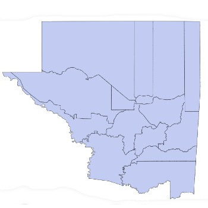
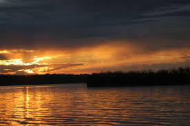

Localización
El departamento de Petén se sitúa en la región VIII o región Petén en la república de Guatemala, su cabecera departamental es la Isla de Flores; se encuentra a una distancia de 506 kilómetros aproximadamente de la Ciudad Capital. Limita al norte con la república de México; al sur con los departamentos de Izabal y Alta Verapaz; al este con la república de Belice; y al oeste con la república de México. Con latitud de 16°58'03'' y longitud de 89°54'37'', según hoja cartográfica para localización en Flores 2266., horario UTC -6. Y pertenece a la región III o Petén. Cuenta con una extensión territorial de 35,854 kilómetros cuadrados. El monumento de elevación se encuentra en la Cabecera Departamental, a una altura de 127 metros sobre el nivel del mar pero esta es variada debido a la topografía del Departamento, de donde deriva la diversidad de climas dividido en tres zonas: Región Baja, Región Media y Región Alta. Dista a 523 kilómetros de la Ciudad Capital y a 22 kilómetros de la Cabecera departamental, por carretera de terracería, la cual es transitable durante todo el año. La vía de acceso directa es la carretera centroamericana CA-09 hasta La Ruidosa, departamento de Izabal, de donde se toma la carretera CA-13, que conduce a la cabecera departamental de Flores y finaliza en la comunidad del Naranjo, municipio de La Libertad. La Cabecera Municipal se encuentra en el margen suroeste del lago Petén Itzá, a kilómetro y medio por vereda al sur de la Cabecera Departamental.
Geografía: El monumento de elevación se encuentra en la Cabecera Departamental, a una altura de 127 metros sobre el nivel del mar pero esta es variada debido a la topografía del Departamento, de donde deriva la diversidad de climas dividido en tres zonas: Región Baja, Región Media y Región Alta. A la primera corresponden las llanuras y los lagos, donde se encuentra la mayoría de los poblados del Departamento, así como sus grandes praderas o sabanas, a la segunda, corresponden las primeras alturas, que incluyen las pequeñas colinas de los valles; los ríos San Pedro, Azul u Hondo y San Juan. A la Región Alta corresponden las montañas Mayas que se ubican en la parte oeste del Departamento, es en esta región donde se presentan las condiciones climáticas más favorables para el establecimiento de la ganadería y colonias Agrícolas.
Este departamento es atravesado por numerosos ríos, cuyas desembocaduras se encuentran en el Mar Caribe y en el Golfo de México. Además, el departamento cuenta con numerosos lagos y lagunas. Ríos principales: Usumacinta que es el río es el más caudaloso del departamento y de Guatemala; Mopán; La Pasión San Pedro Azul San Juan Salinas Lagos principales Petén Itzá. Es el tercer lago más grande de Guatemala. Yaxhá, El Tigre, Salpetén. Este departamento posee suelos formados en alto porcentaje por aluviones cuaternarios, eocenos, paleoceno-eoceno, cretácico, y la presencia de varias fallas, que provocan los movimientos telúricos. El departamento comprende varias cuencas marinas sedimentarias, dentro de las cuales se depositaron desde fines de la Era Paleozoica, hace más de 200 millones de años, grandes espesores de rocas sedimentarias que hoy día componen el subsuelo de la región.

Clima El clima del Departamento es cálido, con inviernos benignos, húmedos, sin estación seca definida. La temperatura promedio anual máxima es de 29.3° C y la mínima de 21.6°C. La temperatura promedio máxima es de 38.5°C y la mínima de 15°C. El período de lluvias está comprendido entre los meses de mayo a enero, con un promedio anual de lluvias de 2006. 1 milímetro y humedad relativa de 84%. Los cambios atmosféricos actuales por el calentamiento de la tierra han provocado cambios en la humedad del Departamento, actualmente es más cálido y menos húmedo. Debido a las características topográficas propias del Departamento, existe una barrera natural (las Montañas Mayas, ramales de la Sierra Chamá) que lo protege contra huracanes provenientes del mar de las Antillas en la época lluviosa, se producen vientos relativamente fuertes. El bosque seco tropical presenta clima cálido tropical durante todo el año, con temperaturas entre los 25 y los 30 °C, y con lluvias relativamente abundantes, de 1000 a 2000 mm este bioma pasa por una larga estación seca, durante el invierno astronómico, que dura de cuatro a nueve meses. El bosque seco subtropical tiene menor temperatura y por lo tanto menor evapotranspiración, sosteniéndose con una precipitación anual entre 500 y 1000 milímetros. Cuando la pluviosidad es intermedia entre el bosque seco y la selva lluviosa, recibe el nombre de bosque o selva monzónica o también selva estacional o subhúmeda, y se encuentran en zonas climáticas de sabana o clima monzónico con precipitaciones de unos 2000 mm anuales.